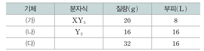

문제:
표는 t℃, 1atm에서 기체 (가)~(다)에 대한 자료이다. (다)는 구성 원소가 X와 Y이고, 분자당 원자 수가 3이며, t℃, 1atm에서 기체 1mol의 부피는 32 L이다.
[정답 제출시 'A,B'와 같이 해당하는 답 사이에 , 사용 후 띄어쓰기 없이 작성 후 제출해주시길 바랍니다.]
이에 대한 설명으로 옳은 것만을 있는 대로 고르시오.
(단, X,Y는 임의의 원소 기호이다.)
ㄱ. X의 원자량은 32이다.
ㄴ. (다)의 분자식은 X2Y이다.
ㄷ. 1g에 들어 있는 Y 원자의 양(mol)은 (다)>(가)이다.